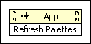

Refresh Palettes
Owning Palette: Palette Editing VIs
Requires: Base Development System
Updates the Controls and Functions palette set programmatically.
This method is similar to the Save Changes button on the Edit Controls and Functions Palette Set dialog box.
Refresh Palettes is an Invoke Node with a LabVIEW class of App.
 Add to the block diagram Add to the block diagram |
 Find on the palette Find on the palette |